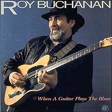

 |
Roy BUCHANAN When A Guitar Plays The Blues Alligator 1985 Roy BUCHANAN - guitar & vocals Special Guests: |
Первый "аллигаторовский" альбом Роя Бьюкэнона, возможно, действительно самый цельно-блюзовый, как то утверждает статья на конверте. Заглавный блюз - великолепен; нетороплив (с интродукцией "бьюкэнэновская бахиниана" в стиле Блюз) - и эмоционален до предъинфарктного состояния. Как всегда хороши гитарные импровизации. Они и есть основное блюдо на этом роскошном пиру для почитателей электрогитарного блюза. Но и присутствие достойных гостей придает альбому новые интересные грани. Отис Клэй со всей увременностью опытного мастера поет соул-блюз, в то время как молодая певица Глория Хардиман поет соул ближе к традициям госпелл. Их голоса уравновешивают эмоциональность-на-грани-нервного-срыва импровизацией Бьюкэнона. Его гитара часто звучит близко к истерике - но полную волю воплям он дает ей в предфинальном инструментальном номере, в шутку названном "Годзилла крадется по аллее". Но в этой музыки - мало шуточного, это чудище - из психоделического кошмара; это прорыв эмоциональной плотины, обозначеной в первом, заглавном номере альбома. Однако, завершив круг, Бьюкэнон не останавливается. Мрак развеевается в финальной короткой слайдовой импровизации - типично-чикагский жизнеутверждающий шафл на прощание: "Все плохо, но все будет хорошо!"